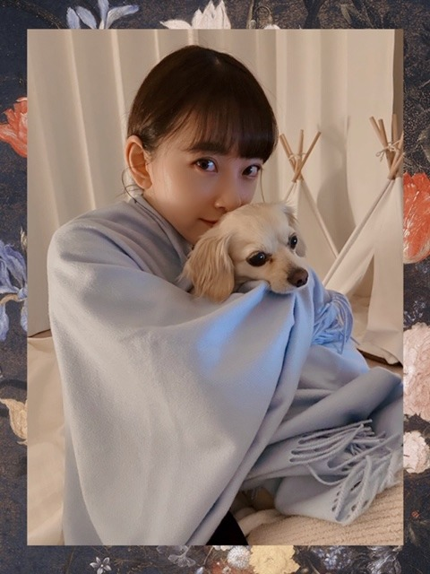

2020/0422Wedくっく
普段は時間がなくて
ゆっくり作れない時もあるけど
今はたっぷり時間があるので
いろんな料理をして過ごしています!
この機会にレパートリー増やすぞ〜

パーカーラクチン

お姉ちゃんが撮ってくれました☺︎
プティくんは、甘えんぼさんです
カワイイ〜
ちなみに今日は
きんぴらごぼう
ネギとえのきのつくねバーグ
鶏ささみの香味ダレかけ
豆腐とわかめの赤だし
を作りました!
家族が美味しいって言ってくれて
嬉しかったです☺︎


味付けうまくできて良かった!

すっぴんだと余計に目の下の
赤みが目立ちますなあ
アイシャドウをよく聞かれますが
元々涙袋の粘膜がピンクなんです...
アレルギー体質だからかな？
質問答えようと思うので
質問ください☺︎
ではでは
2020/04/22 20:00
コメント(1092)
あつ森で今何してるー？？
みおなはかんちゃんと喋る時韓国語ですか？
かんちゃんも日本語ちょっと話せると思うけど、
かんちゃんも日本語ちょっと話せると思うけど、
将来の夢があれば教えてください
未央奈ちゃん♥
こんばんは。
プディー君とかわいい。♥
このような時は、お料理をされ、いくつかつくられ、美味しそう。❗❗
ここで、質問です。今までつくった料理のなかで、もっとも上手くいったのは、また、あまりよくできなかった料理は、何ですか？
周りを笑顔にしてくれますね。♥
いつも、ブログの更新、インスタグラム、ありがとうございます、♥
充分睡眠とって、ときどき体操もね。
おやすみなさい。♥
こんばんは。
プディー君とかわいい。♥
このような時は、お料理をされ、いくつかつくられ、美味しそう。❗❗
ここで、質問です。今までつくった料理のなかで、もっとも上手くいったのは、また、あまりよくできなかった料理は、何ですか？
周りを笑顔にしてくれますね。♥
いつも、ブログの更新、インスタグラム、ありがとうございます、♥
充分睡眠とって、ときどき体操もね。
おやすみなさい。♥
なぜかぁ見るだけで、味や食感がわかる❕❤️❤️❤️❤️❤️笑顔❇️❇️❇️
みおちゃん、ご馳走様でした～～❕❤️❤️❤️❤️❤️❇️❇️❇️笑顔
(σ≧▽≦)σ❤️❤️❤️
❇️❇️おすまし！⚜️❇️彡
ブログありがとうございます。
質問です！
れんたんの好きなところはどこですか？
答えてくれたら嬉しいです☺️
質問です！
れんたんの好きなところはどこですか？
答えてくれたら嬉しいです☺️
みおな
こんばんは！
料理めっちゃ上手ですね
なんか献立も凝ってるので、母親みたいです
普通に食欲が湧いてくるくらい美味しそうです
ネギとえのきのつくねバーグっていうのが、気になりました
ファミレス行けばハンバーグしか頼まないくらい大好きなので、美味しそうです（だけどハンバーグとは微妙に違うか笑）
次は、ピーマンの肉詰めがいいです
パーカーすっぴん可愛いです
メイクを勉強する事も大切な事だと思うけど、俺からすればみおなはメイクをしなくても可愛いです
そもそも日本の女子はそんなにメイクも加工もしなくても、基本的には可愛いんじゃないのかなって思います（ベースが整ってる人が多い気がする）
でも今は時間があると思うので、料理やメイク頑張って下さい
質問
たくさんブログを更新してくれてるけど、みんなのコメントは読んで頂けてますか？（疑ってる訳ではなくて気になったので、気を悪くしないで下さいね）
ありがとうございました
こんばんは！
料理めっちゃ上手ですね
なんか献立も凝ってるので、母親みたいです
普通に食欲が湧いてくるくらい美味しそうです
ネギとえのきのつくねバーグっていうのが、気になりました
ファミレス行けばハンバーグしか頼まないくらい大好きなので、美味しそうです（だけどハンバーグとは微妙に違うか笑）
次は、ピーマンの肉詰めがいいです
パーカーすっぴん可愛いです
メイクを勉強する事も大切な事だと思うけど、俺からすればみおなはメイクをしなくても可愛いです
そもそも日本の女子はそんなにメイクも加工もしなくても、基本的には可愛いんじゃないのかなって思います（ベースが整ってる人が多い気がする）
でも今は時間があると思うので、料理やメイク頑張って下さい
質問
たくさんブログを更新してくれてるけど、みんなのコメントは読んで頂けてますか？（疑ってる訳ではなくて気になったので、気を悪くしないで下さいね）
ありがとうございました
ブログ更新ありがとう！！
料理美味しそう
質問です！未央奈ちゃんがディズニーに行ったら必ず乗るアトラクションってありますか？
料理美味しそう
質問です！未央奈ちゃんがディズニーに行ったら必ず乗るアトラクションってありますか？
みおなちゃんの好きなプリンは何ですか？？
乃木坂以外のアイドルの歌で好きな曲教えてください！
[くっく]ありがとー❗️
ホント美味しそうです❗️
さすが「食物検定3級」ですねー。準1級ぐらいあると思う。
「未央奈の料理見たいです」って言ってから、
手料理の写真を頻繁に投稿してくれるようになった気がして、
嬉しいです。(勘違いだったらすいません)
すっぴんショット感謝です。スゴイ綺麗な肌ですね。
質問
僕は人を笑わせたり笑顔にすることが好きなんですが、
どうしても女子ウケが分かりません。
助けてください。
次のブログと写真集楽しみです❗️
ホント美味しそうです❗️
さすが「食物検定3級」ですねー。準1級ぐらいあると思う。
「未央奈の料理見たいです」って言ってから、
手料理の写真を頻繁に投稿してくれるようになった気がして、
嬉しいです。(勘違いだったらすいません)
すっぴんショット感謝です。スゴイ綺麗な肌ですね。
質問
僕は人を笑わせたり笑顔にすることが好きなんですが、
どうしても女子ウケが分かりません。
助けてください。
次のブログと写真集楽しみです❗️
好きです❤️
メンバーと電話とかします？
誰とします？
メンバーと電話とかします？
誰とします？
未央奈ちゃんブログ更新ありがとう！
パーカーのゆるっとした感じとっても似合っててかわいいしプティくんとマフラーにくるまってるのとってもかわいいです❤︎
未央奈ちゃんが、体型維持のためにしている運動とオススメのヘルシーな料理があったら教えて欲しいです ♀️
あと、最近のすずほりエピソードもききたいです！
いつもいつも元気貰えてます。ありがとうございます！
パーカーのゆるっとした感じとっても似合っててかわいいしプティくんとマフラーにくるまってるのとってもかわいいです❤︎
未央奈ちゃんが、体型維持のためにしている運動とオススメのヘルシーな料理があったら教えて欲しいです ♀️
あと、最近のすずほりエピソードもききたいです！
いつもいつも元気貰えてます。ありがとうございます！
未央奈ちゃんブログ更新ありがとうございます！
今年受験生なんですが、おすすめの勉強法あったら教えて欲しいです！
今年受験生なんですが、おすすめの勉強法あったら教えて欲しいです！
乃木坂のメンバーに会ったらまず何したい？
未央奈ちゃん、ブログ更新ありがとう！
涙袋が素敵だと前から思ってました
質問！！
岐阜駅の信長って最近見たのはいつですか？
涙袋が素敵だと前から思ってました
質問！！
岐阜駅の信長って最近見たのはいつですか？
ＣＯＯＫ！ Ｌｅｔ’ｓ Ｃｏｏｋｉｎｇ！（笑）
ブログの二品ともおいしそうだね～
二枚目はきんぴらごぼう？調理中？（笑）
堀家のごぼうは結構大き目なのね。
それとも未央奈スペシャルですか？
調理中の未央奈の姿を是非アップ願います！！
プティくんって小っちゃいのね～。
額縁に使っている絵、どっかで見たタッチの絵の
気がするんだけど なんて言う画家さんですか？
・・結構有名な西洋の画家さん？ 日本の画家さん？
う～ん思い出せそうで、思い出せない。もどかしい・・・
すっぴん！やっぱりイイね
くっきり二重に、カワイイ唇・・口の形がカワイイ・・
鼻筋も綺麗・・・ 涙袋もとても素敵・・・
これって、ほんとにすっぴん？
美し過ぎるんですけど・・・（笑）
涙袋の色・・・アレルギーですかね？
腫れぼったくはないですけど・・・
映画の感想コメントたくさん入れましたが、メッチャ
長かったせいかコメントに載らないようです。（笑笑）
５作品中４作品は知っていたので、グダグダと羅列した
ものですから文字数制限に引っかかったか？？（笑）
またね！
ブログの二品ともおいしそうだね～
二枚目はきんぴらごぼう？調理中？（笑）
堀家のごぼうは結構大き目なのね。
それとも未央奈スペシャルですか？
調理中の未央奈の姿を是非アップ願います！！
プティくんって小っちゃいのね～。
額縁に使っている絵、どっかで見たタッチの絵の
気がするんだけど なんて言う画家さんですか？
・・結構有名な西洋の画家さん？ 日本の画家さん？
う～ん思い出せそうで、思い出せない。もどかしい・・・
すっぴん！やっぱりイイね
くっきり二重に、カワイイ唇・・口の形がカワイイ・・
鼻筋も綺麗・・・ 涙袋もとても素敵・・・
これって、ほんとにすっぴん？
美し過ぎるんですけど・・・（笑）
涙袋の色・・・アレルギーですかね？
腫れぼったくはないですけど・・・
映画の感想コメントたくさん入れましたが、メッチャ
長かったせいかコメントに載らないようです。（笑笑）
５作品中４作品は知っていたので、グダグダと羅列した
ものですから文字数制限に引っかかったか？？（笑）
またね！
こんばんは
更新ありがとうございます
プティくんかわいい！
料理上手ですねー
美味しそう
未央奈さん大好きです
いつも癒されてます
質問
・おすすめの本を教えてください
答えてくれたら嬉しいです！
体調に気を付けてください
次の更新も楽しみにしています！
更新ありがとうございます
プティくんかわいい！
料理上手ですねー
美味しそう
未央奈さん大好きです
いつも癒されてます
質問
・おすすめの本を教えてください
答えてくれたら嬉しいです！
体調に気を付けてください
次の更新も楽しみにしています！
写真で観ても美味しそうです。
(^ー^)
(^ー^)
男性のファッションはどういったのが好きですか？
いつもブログ更新、モバメありがとね〜٩(*´︶`*)۶
いつもブログ更新、モバメありがとね〜٩(*´︶`*)۶
堀未央奈❤こんばんは❗東京は、まだコロナが流行ってるから外に出れないから家で近頃料理しているんだね(^_^)v今日も作って上手く味付け出来て褒められて良かったね＼(^o^)／色んな料理出来るように頑張ってね(^o^)v今の内しか出来ないよね(^-^)vワンちゃん可愛いね(^o^)v未央奈も可愛いよ(*^O^*)今日も大好きだし愛してる ♥❤またね(*^^*)
未央奈～ こんにちは
ブログ更新ありがとうございます。
大変な毎日が続いていますが、「お料理修行中」、一気に進んで、腕を上げている様子、何よりです。
我が家は先日、たけのこご飯でしたが、つくしを使ったり、そんな季節の料理はいかがですか？
「質問」コーナーということで、さらに聞いてみます。
・岐阜県が舞台の大河ドラマ「麒麟がくる」の展示(可児市・恵那市の大河館)は行きましたか？
・「麒麟がくる」をめぐって、れなちと話し合ったりすることはありますか？
・戦国大名で好きな人は？ 斎藤道三？
ブログ更新ありがとうございます。
大変な毎日が続いていますが、「お料理修行中」、一気に進んで、腕を上げている様子、何よりです。
我が家は先日、たけのこご飯でしたが、つくしを使ったり、そんな季節の料理はいかがですか？
「質問」コーナーということで、さらに聞いてみます。
・岐阜県が舞台の大河ドラマ「麒麟がくる」の展示(可児市・恵那市の大河館)は行きましたか？
・「麒麟がくる」をめぐって、れなちと話し合ったりすることはありますか？
・戦国大名で好きな人は？ 斎藤道三？
1Dの曲、なにが好きー？？
自分は rock me と over again が好き！
自分は rock me と over again が好き！
質問募集中との事なので投稿します。
乃木坂46が9年目を迎えた現在、堀さんが加入時と今現在で一番大きく変わった事は何ですか？
気が向いたら返答をお願い致します。
乃木坂46が9年目を迎えた現在、堀さんが加入時と今現在で一番大きく変わった事は何ですか？
気が向いたら返答をお願い致します。
みおちゃん
ブログもモバメもありがとう
質問！
みおちゃんがあと何日でどうぶつの森を飽きてやらなくなるか予想をしてください！
お願いします！
いつも応援してます。
おやすみなさい
ブログもモバメもありがとう
質問！
みおちゃんがあと何日でどうぶつの森を飽きてやらなくなるか予想をしてください！
お願いします！
いつも応援してます。
おやすみなさい
ブログ更新ありがとうございます！！
めちゃくちゃ素敵です！
今1人暮らしで外出れないので簡単な自炊料理を教えてください！！
めちゃくちゃ素敵です！
今1人暮らしで外出れないので簡単な自炊料理を教えてください！！
好きな言葉を教えてください！！！
しーつもーんで〜す
得意料理はなんですか〜・
得意料理はなんですか〜・
ブログ更新多くてありがとう！！！
堀ちゃんの涙袋めっちゃ好きです…。笑
質問です！！
バイオハザードやってるらしいですがバイハシリーズで1番何が好きですか〜？？
堀ちゃんの涙袋めっちゃ好きです…。笑
質問です！！
バイオハザードやってるらしいですがバイハシリーズで1番何が好きですか〜？？
未央奈さんブログ更新ありがとうございます！
いつも応援しています！
最近見た映画はありますか？
これからもずっと応援しています！
未央奈さんも十分に体調には気をつけてくださいね〜
いつも応援しています！
最近見た映画はありますか？
これからもずっと応援しています！
未央奈さんも十分に体調には気をつけてくださいね〜
インスタ楽しみです。
kpopで好きなグループと推しメン教えてくださーい
ちなみに私はIZONEが好きでユジンペンです！
ちなみに私はIZONEが好きでユジンペンです！
ブログ更新ありがとう～！
どれも美味しそうで、こんな料理ができる大人になりたいな～と思いました！
プティくんとの写真が可愛い～！
もちろんスッピンの未央奈もメイクしてる未央奈も大好きです。
質問～～！！
今一番会いたいメンバーは？
気持ちがマイナスになってしまったときどうしていますか？？
体調に気をつけてね！
どれも美味しそうで、こんな料理ができる大人になりたいな～と思いました！
プティくんとの写真が可愛い～！
もちろんスッピンの未央奈もメイクしてる未央奈も大好きです。
質問～～！！
今一番会いたいメンバーは？
気持ちがマイナスになってしまったときどうしていますか？？
体調に気をつけてね！
未央奈ちゃん!!
未央奈ちゃんは今シャンプーは何を使ってますか??
よかったら教えてほしいです(*^^*)
未央奈ちゃんは今シャンプーは何を使ってますか??
よかったら教えてほしいです(*^^*)
お料理って一品でも何通りもの作り方があるから、どれが自分に一番合った味なのか、色々創作なども交えて作ったりできて楽しいよね。写真のお品、美味しそうだね。
未央奈ブログ更新ありがと！
未央奈のブログが日々の楽しみ、癒しになってます！
質問
最近のみなみおなの仲良しエピソードを教えてください！
未央奈のブログが日々の楽しみ、癒しになってます！
質問
最近のみなみおなの仲良しエピソードを教えてください！
みおなもプティも可愛いです！
ネイル見せて欲しい！
ネイル見せて欲しい！
ブログ更新ありがとうございます！
質問↓
漫画は読みますか？
もし読んでいたらオススメ作品はなんですか！
僕は東京喰種が好きです！
質問↓
漫画は読みますか？
もし読んでいたらオススメ作品はなんですか！
僕は東京喰種が好きです！
ライスください！
頻繁にブログ更新してくださりありがとうございます。
堀さんの名前の由来はなんですか？教えていただけると嬉しいです！
堀さんの名前の由来はなんですか？教えていただけると嬉しいです！
料理美味しそう! こりゃ男はたまらん。たまらんよ。質問、好きな男子のブランドとかある? 僕はセットアップでハットスタイルです。
今誰と一番会いたいですか
ブログ更新ありがとうございます！
高校生になって野球で甲子園に絶対行くので
応援してください！
普段は何しとる事が多いですか？
次のブログも楽しみにしてます！
高校生になって野球で甲子園に絶対行くので
応援してください！
普段は何しとる事が多いですか？
次のブログも楽しみにしてます！
あれだけ可愛い未央奈姉ちゃんいたら、プティ君甘えるに決まってる。
質問
プティ君と普段何して遊んでますか？
今、ブームになってるオン飲みをメンバーや友人などとやったりしてますか？
質問
プティ君と普段何して遊んでますか？
今、ブームになってるオン飲みをメンバーや友人などとやったりしてますか？
堀ちゃん、ブログ更新ありがとうございました
堀ちゃん、超絶かわいいねー
堀ちゃん、超絶かわいいねー
乃木坂さんに入りたくてメイクの勉強をしてるんですけど、うまくできないので未央奈さんなりのメイク方法を教えてください！
(アイブロウが苦手なのでコツを教えてください！)
私、キャンメイクのコスメが好きなんですけど未央奈さんはキャンメイクのコスメ使ったことありますか？使ったことあったらオススメ教えてください！
質問多くてごめんなさいm(__)m
乃木坂さんに入ったら未央奈さんとコスメとかスキンケアなどのお話をするのが夢です。
以前、新聞でたまたま未央奈さんの記事(ホットギミックのときのです。)を見ました。その記事には「努力して気持ち明るく」と書かれてました。私は、人と話すのが苦手で学校でも多分みんなから暗くてつまんない人間だと思われてる気がします。私は、そんな自分が大嫌いです。だから記事を読んで私も何か努力しようと思いました。でも、部活にも入ってない私は、努力することが見当たりませんでした。勉強と、習い事を努力しようと思ったけど、それは、今までもやってきたことだったので変わんないなと思いました。その頃私は、心のどこかで乃木坂さんに入りたいなと思ってたのでそれを実現してやろうと思いました。それからずっとダンスや歌、肌のお手入れ、メイク(おしゃれになる)、人と面と向かって話すことなどいろんなことを頑張ってきました。なので、何ヵ月か前の私より今の私は、少し強くなって明るくなった気がします。夢を必死に無我夢中で追いかけるだけで人って変わるんだなと思いました。私は、弱くて情けない、目に見えないなにかも分からないようなものに縛り付けられていると勝手に思ってて毎日が辛いです。でも、そんな私の唯一の支えになってるのが乃木坂さんです。だから、乃木坂さんに入って、今の自分を変えて、私みたいに生きる希望を失っている人に勇気と夢と希望を与えられるような存在になりたいです。
家で歌とかダンスの練習してると家族にバカにされるので家族に中々思いを伝えることができません。でも、反対されても見返してやると思って頑張ります！
長々とすいませんでしたm(__)m
ちなみに新聞の記事はベッドのすぐ横に貼って毎日心に刻んでいます。
(アイブロウが苦手なのでコツを教えてください！)
私、キャンメイクのコスメが好きなんですけど未央奈さんはキャンメイクのコスメ使ったことありますか？使ったことあったらオススメ教えてください！
質問多くてごめんなさいm(__)m
乃木坂さんに入ったら未央奈さんとコスメとかスキンケアなどのお話をするのが夢です。
以前、新聞でたまたま未央奈さんの記事(ホットギミックのときのです。)を見ました。その記事には「努力して気持ち明るく」と書かれてました。私は、人と話すのが苦手で学校でも多分みんなから暗くてつまんない人間だと思われてる気がします。私は、そんな自分が大嫌いです。だから記事を読んで私も何か努力しようと思いました。でも、部活にも入ってない私は、努力することが見当たりませんでした。勉強と、習い事を努力しようと思ったけど、それは、今までもやってきたことだったので変わんないなと思いました。その頃私は、心のどこかで乃木坂さんに入りたいなと思ってたのでそれを実現してやろうと思いました。それからずっとダンスや歌、肌のお手入れ、メイク(おしゃれになる)、人と面と向かって話すことなどいろんなことを頑張ってきました。なので、何ヵ月か前の私より今の私は、少し強くなって明るくなった気がします。夢を必死に無我夢中で追いかけるだけで人って変わるんだなと思いました。私は、弱くて情けない、目に見えないなにかも分からないようなものに縛り付けられていると勝手に思ってて毎日が辛いです。でも、そんな私の唯一の支えになってるのが乃木坂さんです。だから、乃木坂さんに入って、今の自分を変えて、私みたいに生きる希望を失っている人に勇気と夢と希望を与えられるような存在になりたいです。
家で歌とかダンスの練習してると家族にバカにされるので家族に中々思いを伝えることができません。でも、反対されても見返してやると思って頑張ります！
長々とすいませんでしたm(__)m
ちなみに新聞の記事はベッドのすぐ横に貼って毎日心に刻んでいます。
頻繁に更新してくれてありがとう！
みおなのファンになってもう4年経ったよ。
(時間の流れは早いなー)
せっかくだから質問しまーす。
3期生のメンバーで誰と仲良し？(見てくれたら嬉しいな)
みおなのファンになってもう4年経ったよ。
(時間の流れは早いなー)
せっかくだから質問しまーす。
3期生のメンバーで誰と仲良し？(見てくれたら嬉しいな)
私も何かこの期間に何か始めようと
思ってるから料理やろうかな！（＾ν＾）
未央奈ちゃんに質問！
この小説(本や漫画)オススメ！というのありますか？
思ってるから料理やろうかな！（＾ν＾）
未央奈ちゃんに質問！
この小説(本や漫画)オススメ！というのありますか？
最近見た夢は⁈^_^
怖い夢でも楽しい夢でも何でもOK( ´ ▽ ` )
怖い夢でも楽しい夢でも何でもOK( ´ ▽ ` )


再びこんばんわわわʕ•ᴥ•ʔ
No.94の
もう既に読んでるんだけど（勝手に…）未央菜たんって読んでもいいかなー。
のところ、
読んでも→呼んでも
です…すみません。
間違ってしまったので訂正させていただきました。
22:43頃に質問を書いたので、是非！
待ってます❤︎
未央菜たん大好きっ♬